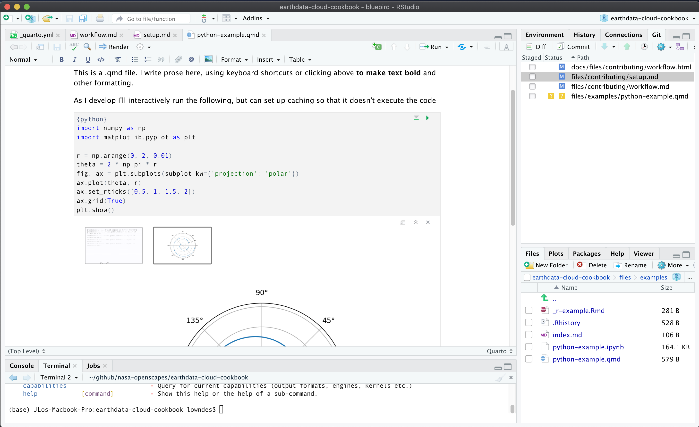

Workflow
Workflow for contributing to our Cookbook
Your workflow can be from wherever you are most comfortable. You can develop chapters working in a text editor, integrated development environment (IDE), or notebook interface. And you can serve Quarto from the Command Line or R. Quarto will combine files of different types ( .md , .ipynb, .Rmd, and .qmd) to make the Cookbook. This workflow can streamline collaboration for scientific & technical writing across programming languages.
By default, rendering the Cookbook will only act on markdown text and will not execute any code. This way, rendering the whole Cookbook will not become overly cumbersome as it grows, and there is not one single virtual environment with all the libraries required. Instead our workflow is that as you develop a single chapter (or section), you control when you render, and can create a requirements.txt file for that chapter (or section). This will also make it much easier to port lessons that work standalone and are ready for a Cloud instance or a workshop.
Quickstart reference
## check which branches exist, where you are, and pull recent from main branch
git branch
git checkout main
git pull
## create and switch to new branch
git checkout -b branch-name
## develop content
## write prose in markdown, code in R and Python
## commit changes
git add --all
git status
git commit -m "my commit message here"
## push changes
git push -u origin branch-name # connect your branch to github.com and push
## create a pull request
## from GitHub.com, create a pull request and once it is merged, delete your branch
## delete branch
git checkout main # switch to the main branch
git pull # pull merged updates from github.com
git branch -d branch-name # delete old local branchGitHub Workflow
First let’s talk about the GitHub part of the workflow.
We will work in branches so as to not overwrite each other’s work, and let GitHub do what it does best.
The main branch will be the current approved version of the book. The main branch is what displays at https://nasa-openscapes.github.io/earthdata-cloud-cookbook.
A nice clean workflow with branches is to consider them temporary. You pull the most recent from main, you create a branch locally, you make your edits, you commit regularly, you push regularly to github.com, and then you create a pull request for it to be merged into main, and when it’s approved the branch is deleted on github.com and you also delete it locally. That’s the workflow we’ll walk through here. A great resource on GitHub setup and collaboration is Happy Git with R, which includes fantastic background philosophy as well as bash commands for setup, workflows, and collaboration.
The following assumes you’re all setup from the previous chapter.
Branch setup
First off, check what branch you’re on and pull the most recent edits from the main branch. If you need to switch branches, use git checkout.
git branch # returns all local branches
git checkout main # switch branch to main
git pull # pull most recent from the main branchIf you are already on the main branch, git will tell you, and that’s fine.
(If you have any residual branches from before, you’ll likely want to start off by deleting them — assuming they were temporary and have been merged into github.com. You can delete a branch with git branch -d branch-name).
Next, create a new branch, then switch to that branch to work in. Below is a one-step approach for the two-step process of git branch branch-name then git checkout branch-name (read more).
git checkout -b branch-name # create and switch to new branchDevelop content
Time to edit and develop content, and run your Quarto Workflow – see specific instructions below. While you’re developing, you’ll want to frequently commit and push your changes.
Commit changes
You’ll commit your work regularly as you go, likely using the following, which commits all files you’ve affected within the Cookbook project:
git add --all
git commit -m "my commit message here" From R Packages:
A commit takes a snapshot of your code at a specified point in time. Using a Git commit is like using anchors and other protection when climbing. If you’re crossing a dangerous rock face you want to make sure you’ve used protection to catch you if you fall. Commits play a similar role: if you make a mistake, you can’t fall past the previous commit.
Here are some of Hadley Wickham’s suggested best practices
If you added or made changes to any code (including changing the dataset upon which existing code relies), re-render those files individudally. See the Quarto render section for more details. Afterwards, git add and git commit any changes to the updated _freeze directory before continuining on to the next step.
Local re-rendering is necessary in cases where code is changed because the workflow used to make this site assumes that all code has been pre-executed. Read more about this at freeze section at the Quarto docs.
Push changes
When you’re ready to push changes you’ve made in your branch, you’ll first need to connect it to github.com by pushing it “upstream” to the “origin repository” (-u below is short for --set-upstream):
git push -u origin branch-name # connect your branch to github.com and pushThe above is a one-time command to connect your local branch back to github.com. After you’ve pushed successfully the first time, then as you continue to commit, you’ll be able to push as normal:
git pushUpdate Local Branch with remote Main
If while you’re working you would like to update your local your-branch with the most recent updates on the main branch on GitHub.com, there are several ways to do this.
checkouts and merge main
Git Update Local Branch with remote Master
git checkout main
git pull
git checkout your-branch
git merge mainfetch and merge origin/main
git checkout your-branch
git fetch
git merge origin/mainPull Request
Now you’ve synced your work to github.com. It is currently online, in a separate branch from the main branch. Go to https://github.com/nasa-openscapes/earthdata-cloud-cookbook, find your branch, and do a pull request.
TODO: Let’s discuss our review process:
- Tag someone to review, (including you if it’s a quick fix?)
- Timeline
- Merging
When the pull request is merged, delete the branch on github.com. GitHub will prompt you with a button at the end of the merge.
Delete Branch
Once your pull request is merged and you’ve deleted the branch from github.com, then come back to your local setup and delete the branch locally:
git checkout main # switch to the main branch
git pull # pull merged updates from github.com
git branch -d branch-name # delete old local branchQuarto Workflow
Now the fun part! Our overall workflow will be to serve the book at the beginning, develop/edit chapters as simple text files (.md/.qmd/.Rmd) or executable notebooks (.ipynb) that will all render into the book.
Quarto lets us easily convert between file types, so depending on how you prefer to work and how you’d like to interact with different audiences, we can go between formats as we wish. For example, we can converting an existing .ipynb to .qmd to collaborate during development, and then convert back to .ipynb files for our workshops. See quarto convert help for details.
As you work, you’ll follow our GitHub workflow above, committing regularly. And you can optionally use quarto render to rebuild the whole Cookbook before pushing to github.com.
The following is to run Quarto from the command line; see quarto.org to see equivalents in R.
Quarto serve
The thing to do first is to “serve” the Cookbook so that we can see what it looks like as we develop the chapters (it’s called “serve” because it’s really a website that looks like a book).
Run the following from your branch in your earthdata-cloud-cookbook directory from the command line:
quarto serveAnd after it’s is served, you can click from the console (or paste the url into your browser) to see the development version of the Cookbook.
You can open another instance to continue working from the command line, including running other shell commands and rendering (see next). Launching your command line shell of choice will open a new instance.
Develop Cookbook Content
You can develop Cookbook chapters as text files (.md/.qmd/.Rmd) in the text editor of your choice. You can also develop chapters as .ipynb from JupyterLab, Anaconda, etc (see more about JupyterLab with Quarto).
RStudio IDE & Visual Editor
You can also use the RStudio IDE. It can be used as a simple text editor, but it can also interactively execute code in .qmd and .Rmd files — which are plain text files. This will streamline testing and collaboration as we develop content.
The RStudio IDE Visual Editor makes this experience feel like a cross between an interactive notebook and a Google Doc:

Above shows the Visual Editor in the top left pane with an interactive .qmd file. Learn more about the RStudio Visual Editor.
Another benefit of the RStudio IDE is that it has a docked command line (Terminal, bottom left pane), file navigation (bottom right pane) and GitHub interface (top right pane). The IDE helps keep things organized as you work, and provides a visual way to review your git commits and do common commands (see this RStudio-GitHub walk through from R for Excel Users). Note too that the image shows the second instance of the Terminal command line; the first is being used to serve Quarto.
Quarto render
As you develop book chapters and edit files, any .md files will automatically refresh in the browser (so long as quarto serve is running)!
To refresh files with executable code, you’ll need to render them individually. You can do the following to render .ipynb/.qmd/.Rmd files so that they show up refreshed in the served Cookbook.
quarto render my-document.ipynb ## render a notebook
quarto render my-work.qmd ## render a Quarto file
quarto render my-contribution.Rmd ## render a RMarkdown fileFrom the RStudio IDE, you can also press the Render button to render .qmd and .Rmd files.
And you can also render the whole book:
quarto renderLearn more about rendering with Quarto. From J.J. Allaire:
The reason Quarto doesn’t render
.Rmdand.qmdon save is that render could (potentially) be very long running and that cost shouldn’t be imposed on you whenever you save. Here we are talking about the age old debate of whether computational markdown should be rendered on save when running a development server. Quarto currently doesn’t do this to give the user a choice between an expensive render and a cheap save.
Virtual Environments
If you are working on a chapter that loads any Python or R packages, to make your work reproducible you’ll need to create and then update the environments.txt file. Do this use the pip freeze command:
pip freeze > requirements.txtThis will overwrite/update the requirements.txt file. Depending on where you are working, you might also want to create a new subfolder to store the requirements.txt. See the next section on Cookbook Structure.
You you will then commit and push along with your other edits back to github.com.
TODO: info about conda…
Cookbook Structure
Each chapter in our Cookbook is a separate file (.md/ .ipynb/.qmd/.Rmd). These are stored in our files directory, organized by sub-directory.
The Cookbook structure (i.e. the order of sections and chapters) is determined in the _quarto.yml file in the root directory. We can shuffle chapter order by editing the _quarto.yml file, and and add new chapters by adding to the _quarto.yml and creating a new file in the appropriate sub-directory that is indicated in _quarto.yml.

Please experiment, add new chapters and sections; we can shuffle chapter order and subsections as we continue to develop the Cookbook, nothing is set in stone.
Cookbook Practices
These are shared practices that we have for co-developing the Cookbook. This will be developed further as we go!
Executing notebooks
As you develop files with executable code ( .qmd, .Rmd, and .ipynb), you can decide if you don’t want the notebook to execute. By adding YAML as a raw text cell at the top of an .ipynb file, you can control whether it is executed or not. Adding execute: false to the YAML at the top of the file basically means that Quarto never runs the code, but the user of course still can interactively in Jupyter.
Using .qmd there are also ways to control execution cell-by-cell via # | syntax within a code chunk; see https://quarto.org/docs/computations/execution-options.html
Code Review
Upcoming.
Troubleshooting
Error: AddrInUse
ERROR: AddrInUse: Address already in use (os error 48)
This error is because you had more than one instance of quarto serve going in your session. So close other command line instances that are running and try again. (If you use the R package and do quarto_serve() it will automatically make sure you only ever have 1 instance.)
Leave/exit a virtual environment
In your Command Line Shell, if you want to leave your virtual environment, the command is:
deactivateThe way you tell that you are in a virtual environment: it’s named in parentheses at the beginning of your prompt:
(.venv) (base) JLos-Macbook-Pro:earthdata-cloud-cookbook lowndes$ deactivate
(base) JLos-Macbook-Pro:earthdata-cloud-cookbook lowndes$